Polygons and Angles
A polygon is a shape which is bounded by straight lines. A square, for example, is a polygon, but a circle is not. If all sides of a polygon have the same length, it is called a regular polygon. Here are some examples of polygons:
| 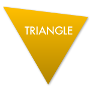 |  | 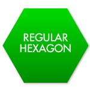 | 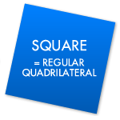 | 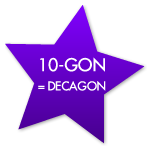 |


In this section we will derive a formula for the sum of the internal angles of any polygon – all angles inside the shape. This formula will be useful later. Since it is the one with the fewest angles, let us start with the triangle.
In the animation on the right, the three internal angles are highlighted red, blue and green. Observe how the three angles at the top must be the same as the three angles inside. And they add up to exactly half a circle: to 180°.
There is nothing special about this particular triangle – we could have done exactly the same in any triangle. Therefore the angles in any triangle always add up to 180°.
Showing that the angles in a triangle add up to 180° is very intuitive, and it is the first example of a proof in this eBook. However, when examined more closely, there are a number of subtleties: the proof essentially requires us to use Euclid’s five axioms, including the parallel postulate. This axiom is about two parallel lines never meeting, even if you extend them forever. It is curious that the properties of small triangles depend on what happens to infinite lines…
There are certain places where the angles in a triangle don’t add up to 180° – for example on the surface of a sphere. This was famously tested by Carl Friedrich Gauss (1777 – 1855), who measured the angles of the triangle on the spherical Earth, formed by three mountains, Hohenhagen, Inselberg and Brocken.
This doesn’t mean that our proof doesn’t work, or that Euclid’s axioms are incorrect. Euclid’s axioms form the basis for one particular kind of geometry. If we start with different axioms we get a different kind of geometry where triangles may have other properties.
When we have polygons with more than three sides, we can split them up into many triangles. We know the sum of the angles in these triangles, and when we add them all up we get the sum of the angles in the original polygon.
| 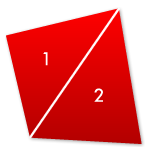 |  | 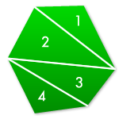 | 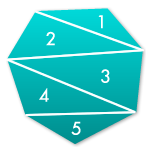 | 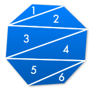 |
| Quadrilateral 2 triangles needed 2 × 180° = 360° | Pentagon 3 triangles needed 3 × 180° = 540° | Hexagon 4 triangles needed 4 × 180° = 720° | Heptagon 5 triangles needed 5 × 180° = 900° | Octagon 6 triangles needed 6 × 180° = 1080° |
This is quite a remarkable observation: the sum of the internal angles is the same for all polygons with the same number of sides – no matter how big they are or what they look like. Notice that we split polygons with (V.PolyM==2)?"n":V.PolyM sides into (V.PolyM==2)?"n – 2":(V.PolyM-2) triangles. Therefore the sum of the internal angles is (V.PolyM==2)?"(n − 2) × 180°":"("+V.PolyM+" – 2) × 180° = "+((V.PolyM-2)*180)+"°".
We can say even more about regular polygons, because all internal angles must have the same size. (Unless the polygon is not convex, such as in a regular star.) We know the sum of all angles in the polygon and we also know how many angles there are. For a regular polygon with (V.PolyN==2)?"n":V.PolyN sides we get
size of one angle = sum of all anglesnumber of angles = ((V.PolyN==2)?"n":V.PolyN − 2) × 180°(V.PolyN==2)?"n":V.PolyN = (V.PolyN==2)?'180° − 360°n':(Math.round(180-360/V.PolyN)+'°').
In a regular (equilateral) triangle with n = 3, we find that the angles are all 60°. In a square with n = 4, all angles are 90°, and so on.
If we look at regular convex polygons with more and more sides, we notice that the size of the internal angles gets closer and closer to 180°. This property is called convergence. It can never exceed 180° since, in the equation above, we subtract something from 180°.
At the beginning of this chapter, we noted that a circle is not a polygon since it consists of a curved line. Instead we could think of a circle as a regular polygon with infinitely many sides.
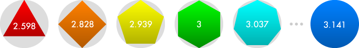
This idea can be used to calculate Pi. These numbers are the approximations for Pi if we approximate the circle using a regular polygon and calculate its circumference and “radius”.
Tessellations
Polygons appear everywhere in nature. They are especially useful if you want to tile a large area, because you can fit polygons together without any gaps or overlaps. These patterns are called tessellations.
 |  |  |
| Hexagonal Honey Comb | Quadratic Pavement Pattern | Hexagonal Greenhouse Roof |
When trying to create a tessellation, you will notice that some shapes tessellate easily, while others don’t tessellate at all. In fact, the only regular polygons that tessellate are equilateral triangles, squares and regular hexagons.
 | 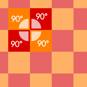 |  |  |
| triangles tessellate | squares tessellate | pentagons don’t tessellate | hexagons tessellate |
This can be explained using the internal angles of the polygons. In a tessellation, the corners of several polygons meet at one point and the sum of the angles which meet has to be 360°. If the sum is less than 360°, there is a gap; if if the sum is more, there is an overlap.
You can also make tessellations consisting of several different polygons – as long as the angles of these shapes can still be combined to make 360°.

Snub Hexagonal Tessellation

Trihexagonal Tessellation

Elongated Triangular Tessellation

Snub Square Tessellation
Rhombitrihexagonal Tessellation

Truncated Square Tessellation
Truncated Hexagonal Tessellation

Truncated Trihexagonal Tessellation
So far we have only thought about which regular polygons tessellate. But of course we can also tessellate non-regular polygons. Remember that the sum of the angles in any quadrilateral is always 360°, and twice the sum of the angles in any triangle is also 360°. This means that any triangle or quadrilateral tessellates, as long as we make sure we join the right corners:
 |  |  |
| all triangles tessellate | all quadrilaterals tessellate | some pentagons tessellate |
Add new: 
 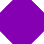
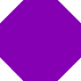
Click the polygons to rotate, shift-click (⇧) to remove existing polygons.
Why don’t you take a screenshot of your tessellations and share them on our Facebook page!
Penrose Tilings
All the tessellations above have one thing in common: they consist of a certain pattern that is repeated again and again. They can continue forever in all directions and always look the same. It seems logically that all tessellations must eventually repeat themselves.
But in the 1970s, the English mathematician Sir Roger Penrose (*1931) made an amazing discovery. He found a set of polygons which can be used to create tessellations, but these tessellations have to be non-periodic. They continue forever and while some areas will look similar, the pattern will eventually continue differently. They are called Penrose tilings, and below are some examples:
 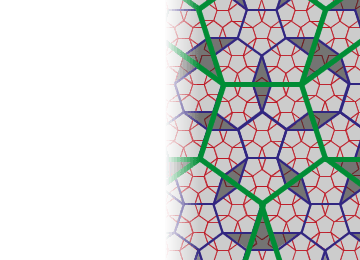 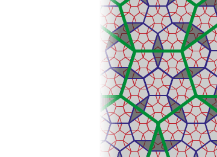 |  |
| Click to reveal more patterns in this Penrose tiling… | A Penrose tiling underlies this image by Urs Schmid |
Notice how, in the left image, you have the same patterns at various scales. The yellow pentagons, blue stars, orange rhombi and green ‘ships’ appear in their original size, in a slightly larger size (dark blue) and an even larger size (dark green). This self-similarity can be used to prove that this Penrose tiling is non-periodic.
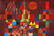 Pentaplexity | by Roger PenroseExtract from Eureka 62, © The Archimedeans
Polyhedra and Platonic Solids
Up to now we have looked at what you can do with polygons in a flat, two-dimensional world. We can also connect polygons to form three-dimensional solids – these are called Polyhedra.
The sides of a polyhedron are called faces, the lines where faces meet are called edges, and the corners where edges meet are called vertices.
Platonic solids are particularly “regular” polyhedra. They are made up of only one kind of regular polygons, and the same number of faces meet at every vertex. They are named after the Greek philosopher Plato, who discovered that there are only five polyhedra with these properties. Their names are derived from the Greek name for the number of faces (“tetra”, for example, means “four”).
 |  |  |  |  |
| Tetrahedron 4 Faces Equilateral Triangles | Hexahedron (Cube) 6 Faces Squares | Octahedron 8 Faces Equilateral Triangles | Dodecahedron 12 Faces Regular Pentagons | Icosahedron 20 Faces Equilateral Triangles |
Plato believed that all matter in the Universe consists of four elements, and that these elements correspond to the Platonic solids: the Tetrahedron as fire, the cube as earth, the Octahedron as air and the Icosahedron as water. The Dodecahedron represented the Universe as a whole. Today we know that there are more than 100 elements, and that they consist of spherical atoms, not polyhedra.
Let us think about why there aren’t any other Platonic solids. Remember that we can only use one kind of regular polygons, and that we need the same number of faces to meet at every vertex. If two faces meet at every vertex, we simply get a flat plane. Therefore we need at least 3 faces meeting at every vertex:
| Regular polygon used | number of faces that meet at every vertex | Result |
| Triangle | 3 | Tetrahedron: |
| 4 | Octahedron: | |
| 5 | Icosahedron: | |
| 6 | Tessellation: | |
| 7 or more | not possible since sum of angles greater than 360° | |
| Square | 3 | Cube: |
| 4 | Tessellation: | |
| 5 or more | not possible since sum of angles greater than 360° | |
| Pentagon | 3 | Dodecahedron: |
| 4 or more | not possible since sum of angles greater than 360° | |
| Hexagon or bigger Polygons | Even just 3 hexagons form a tessellation, and with more than 3 hexagons, or any shape with more vertices, the sum of angles is greater than 360°. | |
These are all the possibilities, so our five Platonic Solids are indeed the only ones.
Euler’s Formula and Dual Solids
Now that we know there are only five Platonic solids, let us explore these in more detail. Here is a table with some of their properties:
| Platonic Solid | Number of Faces | Number of Vertices | Number of Edges | Faces + Vertices | |
| Tetrahedron | 4 | 4 | 6 | 8 | |
| Cube | 6 | 8 | 12 | 14 | |
| Octahedron | 8 | 6 | 12 | 14 | |
| Dodecahedron | 12 | 20 | 30 | 32 | |
| Icosahedron | 20 | 12 | 30 | 32 | |
Notice that the number of faces plus the number of vertices always seems to be 2 more that the number of edges. In other words, F + V = E + 2. This formula was discovered by Leonhard Euler (1707 – 1783). We have just shown that it works for all Platonic solids, but in fact it is true for any polyhedron. There is a very similar formula for the number of faces, edges and vertices of planar graphs.
Another thing we can observe from the table is that the number of faces and vertices is swapped around for cube and Octahedron, as well as for Dodecahedron and Icosahedron. The reason is that these pairs of Platonic solids are “dual”: we can convert one into the other by placing a vertex at the centre of every face, and a face where the vertices have been:
| Cube and Octahedron are dual | Icosahedron and Dodecahedron are dual |
The Tetrahedron is dual with itself. If we were to do the same as above we would simply get two Tetrahedra.
Archimedean Solids
Platonic solids are only a starting point when we think about Polyhedra. Archimedean Solids also consist of regular polygons and look the same from every direction, but they can consist of more than one type of regular polygon. In total there are 13 Archimedean solids, plus two mirror images. You can check that Euler’s formula still holds for these polyhedra.

Truncated Tetrahedron
4 triangles 4 hexagons
18 edges, 12 vertices

Cuboctahedron
8 triangles, 6 squares
24 edges, 12 vertices

Truncated Cube
8 triangles, 6 octagons
36 edges, 24 vertices

Truncated Octahedron
6 squares, 8 hexagons
36 edges, 24 vertices

Small Rhombicuboctahedron
8 triangles, 18 squares
48 edges, 24 vertices

Great Rhombicuboctahedron
12 squares, 8 hexagons, 6 octagons
72 edges, 48 vertices

Snub Cube
32 triangles, 6 squares
60 edges, 24 vertices

Icosidodecahedron
20 triangles, 12 pentagons
60 edges, 30 vertices

Truncated Dodecahedron
20 triangles, 12 decagons
90 edges, 60 vertices

Truncated Icosahedron
12 pentagons, 20 hexagons
90 edges, 60 vertices

Small Rhombicosidodecahedron
20 triangles, 30 squares, 12 pentagons
120 edges, 60 vertices

Great Rhombicosidodecahedron
30 squares, 20 hexagons, 12 decagons
180 edges, 120 vertices

Snub Dodecahedron
80 triangles, 12 pentagons
150 edges, 60 vertices
There are countless more polyhedra: some looking like stars, some consisting of non-regular polygons, and some having holes inside. Their symmetries can be analysed using Group theory and their properties can be explained using geometry. But, most importantly, they look amazing.
 Mathematical Origami
Mathematical OrigamiBeautiful images and folding instructions
Just like the flat tessellations we saw before, we can also try building three-dimensional “tessellations” using Platonic and Archimedean solids. The various solids have to fill space without any gaps or overlaps. There are countless ways to do this, but here are a few examples:
Cubes

Tetrahedron and Octahedron

Truncated Cube and Octahedron

Tetrahedron and Truncated Tetrahedron
Octahedron and Cuboctahedron

Truncated Octahedron

Small Rhombicuboctahedron, Cube and Tetrahedron
Small Rhombicuboctahedron, Cuboctahedron and Cube

Great Rhombicuboctahedron, Truncated Cube and Truncated Tetrahedron

Truncated Octahedron, Truncated Tetrahedron and Cuboctahedron
Great Rhombicuboctahedron, Truncated Octahedron and Cube
Polyhedra in Nature and Technology
The Greeks were wrong in believing that matter consists of Platonic solids. However, like tessellations, they do appear in many other places in nature:
 |  |  | |
| The Circogonia Icosahedra, a Radiolarian. | Some viruses, like HIV, have the shape of Platonic solids. | Atoms in many crystal lattices are arranged in a tetrahedral, cubic or octahedral grid. | |
Mathematics can be used to understand the development and behaviour of these shapes. The reason why they appear in nature is that their shape, because so symmetric, is very efficient. We can use that in technology and everyday life:
 | 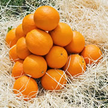 |  | |
| Octahedral space frames can support very large roofs. | The most efficient way to stack spheres is tetrahedral. | The probability of each number is the same. | The most famous polyhedron: a Truncated Icosahedron |